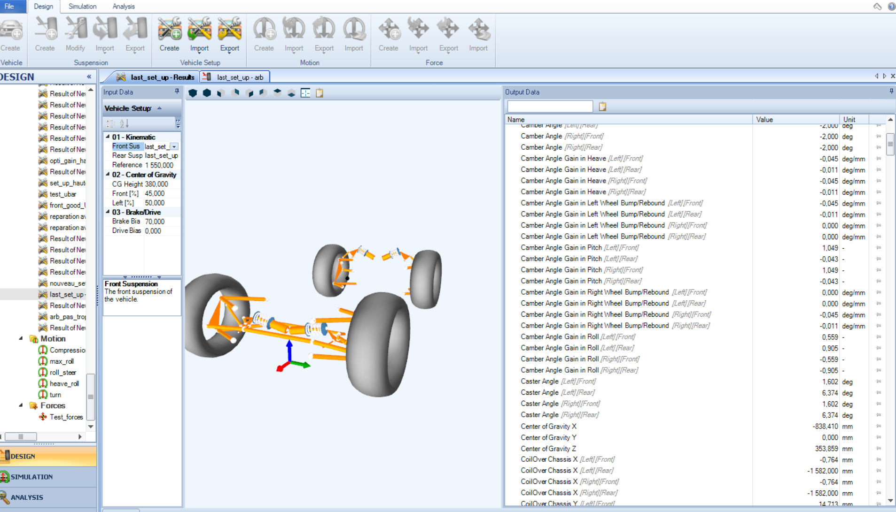
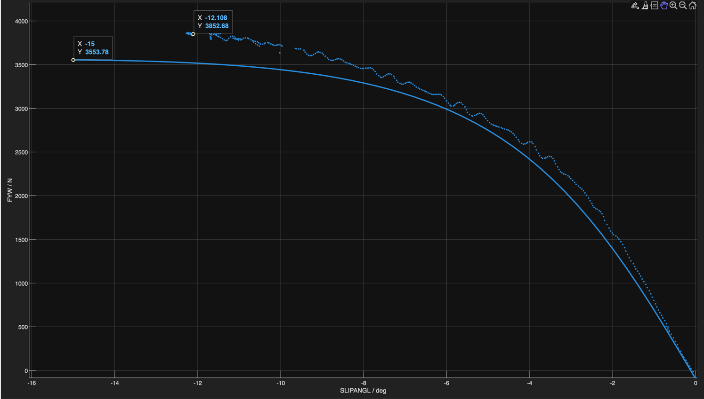
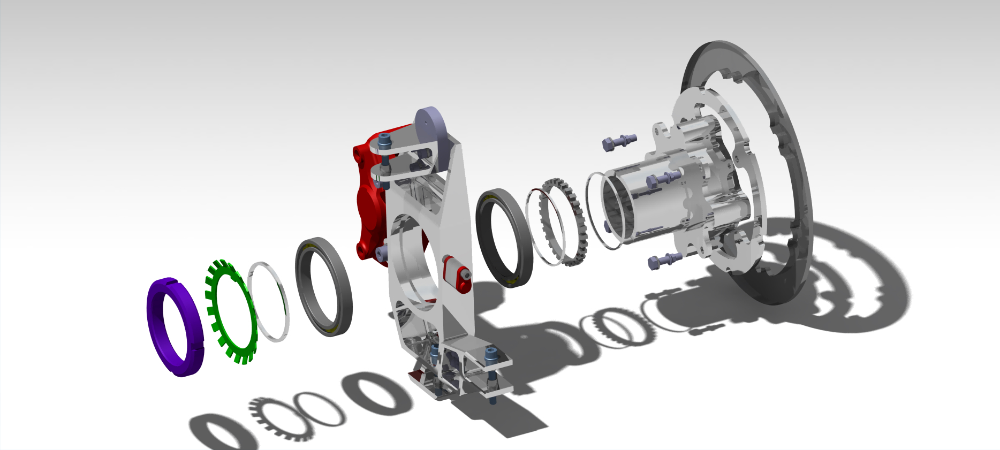
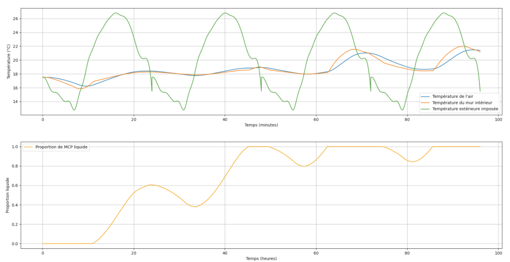

Engineering Projects
Showcasing my technical work in mechanical design and system optimization.
Steering System - Mechanical Design
2025 - Present | EPSA Formula Student
As part of the mechanical development team, I am involved in the design and dynamic optimization of a single-seater race car. This section highlights the steering assembly, focusing on precision and weight reduction.
Interact with the 3D model
Suspension Kinematics
2025 - Present | EPSA Formula Student
Spearheaded the design and development of the complete suspension system. Conducted extensive kinematic simulations using OptimumKinematics to define critical targets, including Ackermann geometry, kingpin inclination, caster, dynamic toe, camber gain in heave...
To ensure accurate vehicle dynamics, I utilized Tire Test Consortium (TTC) data processed via a MATLAB add-on to build a tire models. This data-driven approach allowed for precise force calculations across various slip angles and vertical loads.


Suspension Geometry
Full assembly with chassis integration
Isolated suspension linkages
Front Upright Design & Packaging
2025 - Present | EPSA Formula Student
Beyond kinematics, I managed the global packaging of the front end. This led to the detailed CAD design and structural optimization of the front upright assembly.

Phase Change Material (PCM) Synthesis & Thermal Modeling
2024
To address ecological challenges and reduce building energy consumption, I designed a thermal regulation system utilizing Phase Change Materials (PCM). I synthesized an eutectic mixture of Lauric and Capric acids, selecting it for its high latent heat capacity of 105 kJ/kg.
I constructed a custom, calorifugated experimental setup to characterize the material's thermal properties. The environment was fully automated using an Arduino and a relay module to precisely control the heating element, while continuously recording temperature data.
In parallel, I developed a 1D numerical heat transfer model from scratch in Python. The model simulated the integration of a PCM layer inside a standard wall structure.

